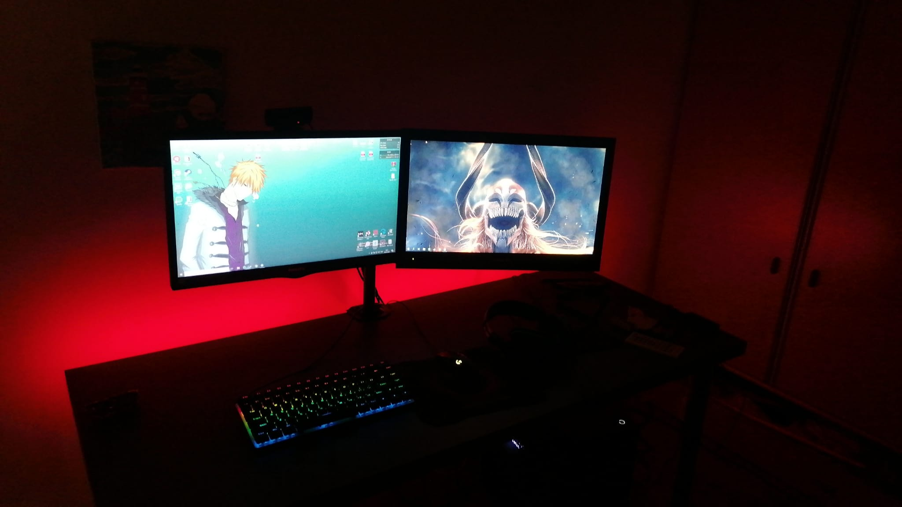

<div id="margincarousel">
<div id="carouselExample" class="carousel slide">
    <div class="carousel-inner">
      <div class="carousel-item active">
        
        <div class="carousel-caption d-none d-md-block">
          <h2>Lavoro</h2>
          <p>Me durante l'esperienza in Liguria Digitale (ultimo a destra)</p>
        </div>
      </div>
      <div class="carousel-item">
        
        <div class="carousel-caption d-none d-md-block">
          <h2>Vita privata</h2>
          <p>Me</p>
        </div>
      </div>
      <div class="carousel-item">
        
        <div class="carousel-caption d-none d-md-block">
          <h2>Postazione</h2>
          <p>La mia attuale postazione di lavoro (still work in progress)</p>
        </div>
      </div>
    </div>
    <button class="carousel-control-prev" type="button" data-bs-target="#carouselExample" data-bs-slide="prev">
      <span class="carousel-control-prev-icon" aria-hidden="true"></span>
      <span class="visually-hidden">Previous</span>
    </button>
    <button class="carousel-control-next" type="button" data-bs-target="#carouselExample" data-bs-slide="next">
      <span class="carousel-control-next-icon" aria-hidden="true"></span>
      <span class="visually-hidden">Next</span>
    </button>
  </div>
</div>